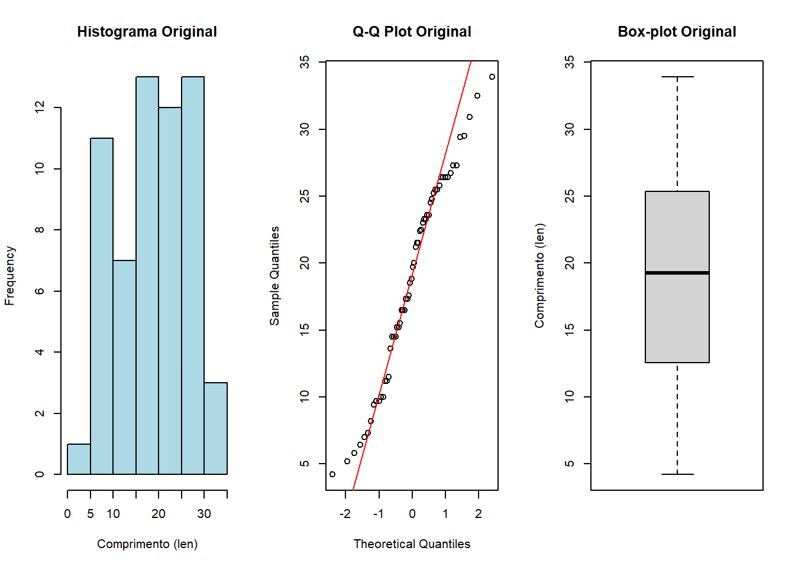
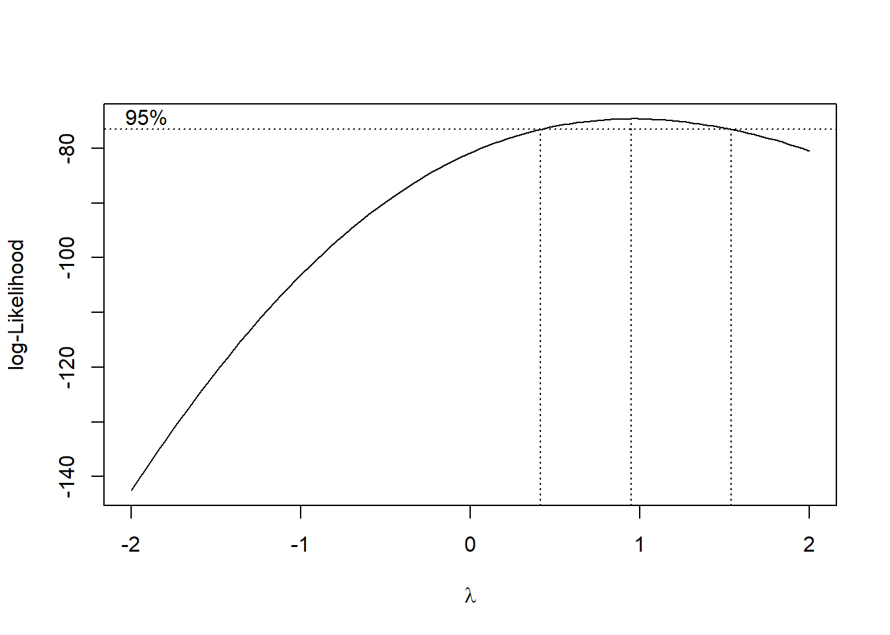
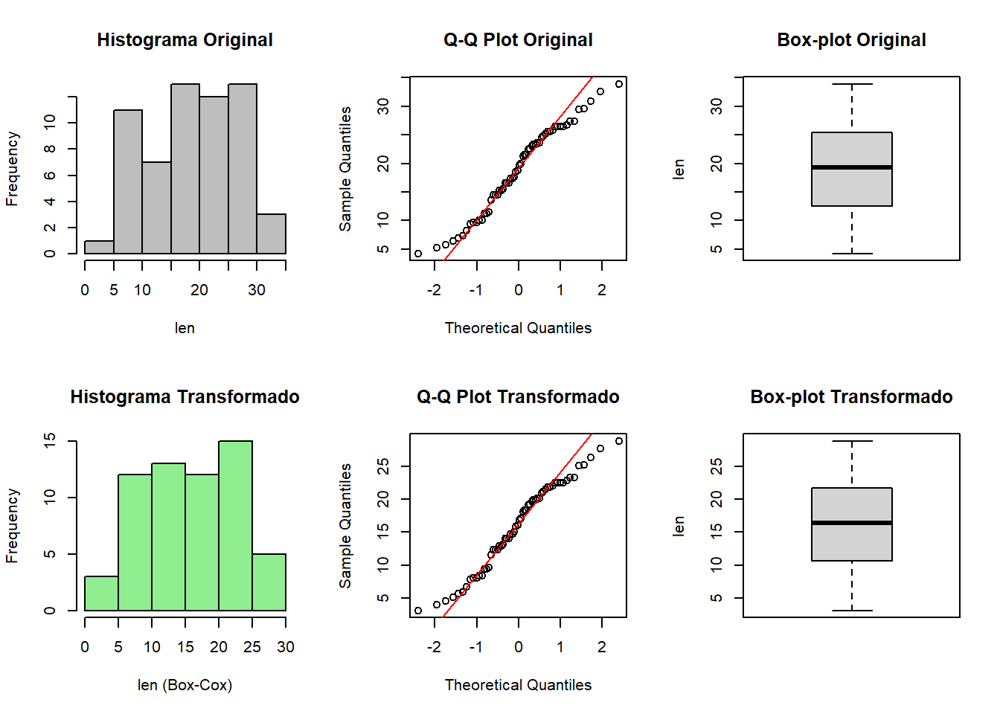

Disciplina: Aprendizado Supervisionado Professor: Prof. Dr. Ricardo Puziol de Oliveira
Autor
Thiago Moraes Rizzieri
Atividade Prática 2.8
Considere o conjunto de dados PimaIndiansDiabetes, disponibilizado na biblioteca mlbench, que reúne informações clínicas de mulheres da etnia Pima com o objetivo de investigar a presença de diabetes mellitus. A base contém variáveis fisiológicas e laboratoriais medidas em unidades e ordens de grandeza distintas, entre as quais destacam-se glucose, pressure, insulin e mass. Nesta atividade, pretende-se aplicar e comparar diferentes procedimentos de normalização como etapa de pré-processamento de variáveis contínuas, com foco na reescala dos dados e na análise dos intervalos resultantes. O procedimento deve ser conduzido de acordo com as seguintes etapas:
selecionar as variáveis contínuas glucose, pressure, insulin e mass;
inspecionar os intervalos originais de variação dessas variáveis;
aplicar, separadamente, os seguintes procedimentos de normalização:
normalização min–max;
normalização pelo valor máximo;
normalização por amplitude;
normalização baseada em quantis;
Ao final, devem ser comparados os resultados obtidos para cada procedimento de normalização, avaliando-se as diferenças nos intervalos de variação das variáveis selecionadas.
Solução:
Carregando os dados com as variáveis solicitadas:
library(mlbench)
Warning: pacote 'mlbench' foi compilado no R versão 4.5.3
library(dplyr)
Anexando pacote: 'dplyr'
Os seguintes objetos são mascarados por 'package:stats':
filter, lag
Os seguintes objetos são mascarados por 'package:base':
intersect, setdiff, setequal, union
glucose pressure insulin mass
Min. : 0.0 Min. : 0.00 Min. : 0.0 Min. : 0.00
1st Qu.: 99.0 1st Qu.: 62.00 1st Qu.: 0.0 1st Qu.:27.30
Median :117.0 Median : 72.00 Median : 30.5 Median :32.00
Mean :120.9 Mean : 69.11 Mean : 79.8 Mean :31.99
3rd Qu.:140.2 3rd Qu.: 80.00 3rd Qu.:127.2 3rd Qu.:36.60
Max. :199.0 Max. :122.00 Max. :846.0 Max. :67.10
Foram criadas funções para cada transformação e os valores foram armazenados no dataframe resultados.
Original MinMax Max Amplitude Quantil
[1,] 0 0 0 0 0.00390625
[2,] 199 1 1 1 1.00000000
Nestes cenário específico, ambas as transformações min–max, pelo máximo e pela amplitude resultaram em um intervalo entre 0 e 1. Enquanto que a transformação pelo quantil, teve o valor mínimo de seu intervalo um pouco superior ao zero. :::
Atividade Prática 2.9
Considere o conjunto de dados lung, disponibilizado na biblioteca survival, que reúne informações clínicas de pacientes diagnosticados com câncer de pulmão, incluindo variáveis demográficas, fisiológicas e indicadores do estado funcional. A base contém variáveis contínuas medidas em escalas distintas, o que motiva a aplicação de procedimentos de padronização como etapa de pré-processamento. Nesta atividade, pretende-se aplicar e comparar diferentes procedimentos de padronização de variáveis contínuas, com o objetivo de remover diferenças artificiais de escala e analisar as propriedades resultantes das variáveis transformadas. O procedimento deve ser conduzido de acordo com as seguintes etapas:
selecionar variáveis contínuas de interesse clínico presentes no conjunto de dados;
inspecionar estatísticas descritivas básicas das variáveis selecionadas nos dados originais;
aplicar, separadamente, os seguintes procedimentos de padronização:
padronização z-score baseada na média e no desvio-padrão amostrais;
padronização baseada na mediana e no intervalo interquartil;
Ao final, devem ser comparados os resultados obtidos para cada procedimento de padronização, avaliando-se as diferenças nas estatísticas descritivas das variáveis transformadas e a adequação de cada abordagem ao conjunto de dados considerado.
Podemos observar que medida de centro e dispersão respectiva para cada padronização é respectivamente 0 e 1, como esperado. A diferença é a amplitude de cada padronização, onde a padronização robusta demonstra apresentar um valor menor do que a padronização z-score. :::
Atividade Prática 2.10
Considere o conjunto de dados ToothGrowth, que descreve o efeito da suplementação de vitamina C sobre o crescimento odontológico em cobaias. A variável len, correspondente ao comprimento do dente, é contínua, estritamente positiva e apresenta assimetria, o que motiva a aplicação de uma transformação como etapa de pré-processamento. Nesta atividade, pretende-se aplicar a transformação de Box–Cox à variável len, com o objetivo de modificar a escala dos dados e avaliar o efeito da transformação sobre as características empíricas da distribuição. O procedimento deve ser conduzido de acordo com as seguintes etapas:
inspecionar a distribuição empírica da variável len;
estimar o parâmetro da transformação de Box–Cox;
aplicar a transformação de Box–Cox à variável len;
Ao final, devem ser comparadas as distribuições e estatísticas descritivas da variável len antes e após a aplicação da transformação, avaliando-se as alterações introduzidas pelo procedimento.
Min. 1st Qu. Median Mean 3rd Qu. Max.
4.20 13.07 19.25 18.81 25.27 33.90
Vamos inspecionar a distribuição da variável len:
par(mfrow =c(1, 3)) # Divide a área de plotagemhist(df_tooth$len, main ="Histograma Original", xlab ="Comprimento (len)", col ="lightblue")qqnorm(df_tooth$len, main ="Q-Q Plot Original")qqline(df_tooth$len, col ="red")boxplot(df_tooth$len, main ="Box-plot Original", ylab ="Comprimento (len)")

Visualmente, aparenta existir uma boa simetria em sua distribuição, apesar existir uma mudança brusca em sua extremidade. Vamos analisar se há melhorias com uma transformação de Box-Cox.
Como visto em aula, primeiro precisamos estimar o parâmetro dessa transformação. Estarei buscando o lambda que maximize a função de verossimilhança:
library(MASS)
Anexando pacote: 'MASS'
O seguinte objeto é mascarado por 'package:dplyr':
select
bc_resultado <-boxcox(lm(len ~1, data = df_tooth), plotit =TRUE)

lambda_ideal <- bc_resultado$x[which.max(bc_resultado$y)]cat("O valor estimado para o parâmetro lambda é:", round(lambda_ideal, 4))
O valor estimado para o parâmetro lambda é: 0.9495
Vamos aplicar a transformação de Box-Cox com o lambda estimado:
par(mfrow =c(2, 3))hist(df_tooth$len, main ="Histograma Original", xlab ="len", col ="gray")qqnorm(df_tooth$len, main ="Q-Q Plot Original")qqline(df_tooth$len, col ="red")boxplot(df_tooth$len, main ="Box-plot Original", ylab ="len")hist(df_tooth$len_transformado, main ="Histograma Transformado", xlab ="len (Box-Cox)", col ="lightgreen")qqnorm(df_tooth$len_transformado, main ="Q-Q Plot Transformado")qqline(df_tooth$len_transformado, col ="red")boxplot(df_tooth$len_transformado, main ="Box-plot Transformado", ylab ="len")

par(mfrow =c(1, 1))
Há singelas diferenças com essa transformação, reduzindo as estatísticas e produzindo um efeito de ``achatamento’’ sutil em seu histograma, mas não aparentou ser tão significativo para estes dados. :::
Atividade Prática 2.11
Considere o conjunto de dados iris, que contém medidas morfológicas de flores do gênero Iris. A base inclui a variável categórica Species, composta por três níveis distintos: setosa, versicolor e virginica. Nesta atividade, pretende-se aplicar o procedimento de one-hot encoding à variável Species, com o objetivo de reespecificar sua representação por meio de variáveis indicadoras binárias. O procedimento deve ser conduzido de acordo com as seguintes etapas:
identificar os níveis observados da variável categórica Species;
construir as variáveis indicadoras binárias correspondentes aos níveis identificados;
Ao final, deve-se verificar a estrutura do conjunto de dados e confirmar que a variável categórica original foi adequadamente representada por um conjunto de variáveis indicadoras binárias, refletindo corretamente os níveis originalmente observados.
Considere o conjunto de dados PimaIndiansDiabetes2, disponibilizado na biblioteca mlbench, que reúne informações clínicas e laboratoriais de mulheres da etnia Pima, com o objetivo de investigar a presença de diabetes mellitus. A variável diabetes representa a classe do desfecho (presença/ausência), enquanto as demais variáveis descrevem características fisiológicas e biométricas dos indivíduos. Nesta atividade, pretende-se aplicar o método hold-out para particionar o conjunto de dados em subconjuntos de treinamento e teste, com controle de reprodutibilidade por meio da fixação de uma semente aleatória e preservação da distribuição do desfecho por amostragem estratificada. O procedimento deve ser conduzido de acordo com as seguintes etapas:
Carregar o conjunto de dados PimaIndiansDiabetes2 e atribuí-lo a um objeto de trabalho;
Definir uma semente aleatória para garantir reprodutibilidade do particionamento;
Realizar a divisão hold-out em proporções de \(70\%\) para treinamento e \(30\%\) para teste, utilizando amostragem estratificada em relação à variável diabetes;
Obter e apresentar um resumo da divisão, incluindo:
A semente aleatória utilizada;
O número de observações e o percentual em cada subconjunto;
A distribuição das classes do desfecho (diabetes) nos conjuntos de treinamento e teste, em frequências e percentuais;
Uma amostra das primeiras observações de cada subconjunto, para inspeção da estrutura.
Ao final, deve-se verificar a consistência do particionamento, confirmando que (i) as proporções especificadas foram atendidas e (ii) a distribuição do desfecho foi adequadamente preservada entre os subconjuntos de treinamento e teste.
Solução:
Podemos utilizar a função createDataPartition, informando a porcentagem de dados particionado para os dados de treino da seguinte forma:
library(caret)
Warning: pacote 'caret' foi compilado no R versão 4.5.3
Carregando pacotes exigidos: ggplot2
Carregando pacotes exigidos: lattice
set.seed(1212)data("PimaIndiansDiabetes2")db <- PimaIndiansDiabetes2train_index <-createDataPartition(db$diabetes, p =0.7, list =FALSE)head(train_index)
Podemos observar como ficou cada uma das partições separadamente:
head(train_set)
pregnant glucose pressure triceps insulin mass pedigree age diabetes
1 6 148 72 35 NA 33.6 0.627 50 pos
2 1 85 66 29 NA 26.6 0.351 31 neg
3 8 183 64 NA NA 23.3 0.672 32 pos
5 0 137 40 35 168 43.1 2.288 33 pos
6 5 116 74 NA NA 25.6 0.201 30 neg
9 2 197 70 45 543 30.5 0.158 53 pos
head(test_set)
pregnant glucose pressure triceps insulin mass pedigree age diabetes
4 1 89 66 23 94 28.1 0.167 21 neg
7 3 78 50 32 88 31.0 0.248 26 pos
8 10 115 NA NA NA 35.3 0.134 29 neg
16 7 100 NA NA NA 30.0 0.484 32 pos
17 0 118 84 47 230 45.8 0.551 31 pos
18 7 107 74 NA NA 29.6 0.254 31 pos
:::
Atividade Prática 2.14
Considere o conjunto de dados SAheart, disponibilizado na biblioteca ElemStatLearn, que reúne informações clínicas e fatores de risco associados a doença coronariana. A variável chd representa o desfecho binário (presença/ausência de doença coronariana), enquanto as demais variáveis descrevem características demográficas e clínicas dos indivíduos. Nesta atividade, pretende-se aplicar o procedimento de validação cruzada k-fold para particionar o conjunto de dados em subconjuntos de treinamento e teste, com controle de reprodutibilidade por meio da fixação de uma semente aleatória e preservação da distribuição do desfecho por amostragem estratificada. O objetivo consiste em construir partições para \(k\in \{3,5,10\}\) e resumir, para cada valor de , as propriedades das divisões geradas. O procedimento deve ser conduzido de acordo com as seguintes etapas:
Carregar o conjunto de dados SAheart e atribuí-lo a um objeto de trabalho;
Definir uma semente aleatória para garantir reprodutibilidade do particionamento;
Para cada valor \(k\in \{3,5,10\}\), realizar a divisão k-fold estratificada em relação à variável chd, obtendo a lista de índices de teste de cada fold;
Para cada fold\(i = 1,\ldots,k\), construir os subconjuntos:
Conjunto de teste: observações pertencentes ao fold i;
Conjunto de treinamento: observações complementares ao fold i;
Para cada fold i, obter e apresentar um resumo contendo:
O número do fold;
A semente aleatória utilizada;
O número de observações e o percentual em cada subconjunto;
A distribuição do desfecho (chd) nos conjuntos de treinamento e teste, em frequências e percentuais;
Uma amostra das primeiras observações de cada subconjunto, para inspeção da estrutura.
Ao final, deve-se verificar a consistência das partições geradas para \(k \in \{3,5,10\}\), confirmando que (i) cada observação é utilizada exatamente uma vez como teste ao longo dos folds e (ii) a distribuição do desfecho foi adequadamente preservada entre treinamento e teste em cada fold.
Para esta atividade, será utilizado o conjunto de dados birthwt, disponibilizado na biblioteca MASS, que reúne informações maternas, comportamentais e obstétricas associadas ao peso ao nascer. A variável low indica a ocorrência de baixo peso ao nascer (desfecho binário de interesse), enquanto bwt representa o peso ao nascer em gramas. As demais variáveis (age, lwt, race, smoke, ptl, ht, ui, ftv) descrevem características associadas à gestação. Nesta atividade, pretende-se aplicar o método bootstrap com o objetivo principal de gerar subconjuntos de treinamento e teste que preservem, de forma aproximada, a estrutura do desfecho binário low. Em cada iteração, será construída uma amostra de treinamento por reamostragem com reposição e um subconjunto de teste composto pelas observações não selecionadas (out-of-bag, OOB), avaliando-se o comportamento dessas partições ao longo das iterações. O procedimento deve ser conduzido de acordo com as seguintes etapas:
Carregar o conjunto de dados birthwt e atribuí-lo a um objeto de trabalho;
Definir uma semente aleatória para garantir a reprodutibilidade do processo de reamostragem;
Fixar o número de iterações bootstrap em \(B = 10,\ldots,100\);
Para cada iteração \(b=1,\ldots,B\):
Gerar uma amostra bootstrap, com reposição, de tamanho igual ao número total de observações;
Definir o conjunto de treinamento como a amostra bootstrap obtida;
Definir o conjunto de teste como o conjunto OOB, formado pelas observações não selecionadas na amostra bootstrap;
Apresentar um resumo contendo:
A iteração b;
A semente aleatória utilizada;
O tamanho do conjunto de treinamento (bootstrap) e do conjunto de teste (OOB), incluindo o percentual do OOB em relação ao total;
O número de observações distintas presentes no conjunto de treinamento e o número de repetições induzidas pela reamostragem;
A proporção da variável low nos conjuntos de treinamento e OOB, em frequências e percentuais;
Ao final, deve-se verificar a consistência do procedimento, confirmando que, em cada iteração, o conjunto de treinamento é composto por reamostragem com reposição e que o conjunto OOB corresponde às observações não selecionadas, cuja dimensão pode variar entre iterações. Em seguida, deve-se selecionar uma iteração bootstrap cujo conjunto OOB apresente dimensão próxima de \(36\%\) do total de observações e preserve, de forma aproximada, a proporção da variável low observada na base original. Para a iteração selecionada, devem ser apresentados resumos descritivos dos conjuntos de treinamento bootstrap e OOB.
--- Iteração 1 | Semente: 68 ---
Treino: 189 obs | OOB: 70 obs (37.04%)
Únicas no Treino: 189 | Repetições: 0
Desfecho (Treino vs OOB):
Normal Baixo Peso
Treino 76.19 23.81
OOB 62.86 37.14
--- Iteração 2 | Semente: 69 ---
Treino: 189 obs | OOB: 77 obs (40.74%)
Únicas no Treino: 189 | Repetições: 0
Desfecho (Treino vs OOB):
Normal Baixo Peso
Treino 71.43 28.57
OOB 64.94 35.06
--- Iteração 3 | Semente: 70 ---
Treino: 189 obs | OOB: 66 obs (34.92%)
Únicas no Treino: 189 | Repetições: 0
Desfecho (Treino vs OOB):
Normal Baixo Peso
Treino 64.02 35.98
OOB 74.24 25.76
--- Iteração 4 | Semente: 71 ---
Treino: 189 obs | OOB: 71 obs (37.57%)
Únicas no Treino: 189 | Repetições: 0
Desfecho (Treino vs OOB):
Normal Baixo Peso
Treino 67.20 32.80
OOB 69.01 30.99
--- Iteração 5 | Semente: 72 ---
Treino: 189 obs | OOB: 74 obs (39.15%)
Únicas no Treino: 189 | Repetições: 0
Desfecho (Treino vs OOB):
Normal Baixo Peso
Treino 64.55 35.45
OOB 71.62 28.38
--- Iteração 6 | Semente: 73 ---
Treino: 189 obs | OOB: 71 obs (37.57%)
Únicas no Treino: 189 | Repetições: 0
Desfecho (Treino vs OOB):
Normal Baixo Peso
Treino 73.02 26.98
OOB 64.79 35.21
--- Iteração 7 | Semente: 74 ---
Treino: 189 obs | OOB: 66 obs (34.92%)
Únicas no Treino: 189 | Repetições: 0
Desfecho (Treino vs OOB):
Normal Baixo Peso
Treino 65.61 34.39
OOB 71.21 28.79
--- Iteração 8 | Semente: 75 ---
Treino: 189 obs | OOB: 66 obs (34.92%)
Únicas no Treino: 189 | Repetições: 0
Desfecho (Treino vs OOB):
Normal Baixo Peso
Treino 65.61 34.39
OOB 72.73 27.27
--- Iteração 9 | Semente: 76 ---
Treino: 189 obs | OOB: 72 obs (38.10%)
Únicas no Treino: 189 | Repetições: 0
Desfecho (Treino vs OOB):
Normal Baixo Peso
Treino 66.67 33.33
OOB 70.83 29.17
--- Iteração 10 | Semente: 77 ---
Treino: 189 obs | OOB: 61 obs (32.28%)
Únicas no Treino: 189 | Repetições: 0
Desfecho (Treino vs OOB):
Normal Baixo Peso
Treino 67.72 32.28
OOB 65.57 34.43
Seleção da iteração ideal:
cat("\n=== SELEÇÃO DA ITERAÇÃO IDEAL ===\n")
=== SELEÇÃO DA ITERAÇÃO IDEAL ===
metricas$Score <-rank(metricas$Desvio_OOB) +rank(metricas$Desvio_Prop)it_ideal <- metricas$Iteracao[which.min(metricas$Score)]cat(sprintf("A iteração selecionada que melhor atende aos critérios é a b = %d.\n", it_ideal))
A iteração selecionada que melhor atende aos critérios é a b = 7.
df_treino_ideal <- lista_treino[[it_ideal]]df_oob_ideal <- lista_oob[[it_ideal]]cat("\n--- Resumo Descritivo: Conjunto de TREINAMENTO (Iteração Selecionada) ---\n")
--- Resumo Descritivo: Conjunto de TREINAMENTO (Iteração Selecionada) ---
print(summary(df_treino_ideal))
low age lwt race
Normal :124 Min. :14.00 Min. : 80.0 Min. :1.000
Baixo Peso: 65 1st Qu.:20.00 1st Qu.:110.0 1st Qu.:1.000
Median :23.00 Median :121.0 Median :2.000
Mean :23.43 Mean :128.8 Mean :1.873
3rd Qu.:27.00 3rd Qu.:138.0 3rd Qu.:3.000
Max. :36.00 Max. :250.0 Max. :3.000
smoke ptl ht ui
Min. :0.0000 Min. :0.0000 Min. :0.00000 Min. :0.000
1st Qu.:0.0000 1st Qu.:0.0000 1st Qu.:0.00000 1st Qu.:0.000
Median :0.0000 Median :0.0000 Median :0.00000 Median :0.000
Mean :0.4074 Mean :0.1799 Mean :0.06878 Mean :0.164
3rd Qu.:1.0000 3rd Qu.:0.0000 3rd Qu.:0.00000 3rd Qu.:0.000
Max. :1.0000 Max. :2.0000 Max. :1.00000 Max. :1.000
ftv bwt
Min. :0.0000 Min. : 709
1st Qu.:0.0000 1st Qu.:2410
Median :1.0000 Median :2977
Mean :0.8783 Mean :2890
3rd Qu.:1.0000 3rd Qu.:3444
Max. :6.0000 Max. :4238
cat("\n--- Resumo Descritivo: Conjunto de TESTE/OOB (Iteração Selecionada) ---\n")
--- Resumo Descritivo: Conjunto de TESTE/OOB (Iteração Selecionada) ---
print(summary(df_oob_ideal))
low age lwt race
Normal :47 Min. :15.00 Min. : 90.0 Min. :1.000
Baixo Peso:19 1st Qu.:19.00 1st Qu.:112.0 1st Qu.:1.000
Median :21.50 Median :121.5 Median :1.000
Mean :22.97 Mean :131.3 Mean :1.833
3rd Qu.:25.00 3rd Qu.:139.5 3rd Qu.:3.000
Max. :45.00 Max. :235.0 Max. :3.000
smoke ptl ht ui
Min. :0.0000 Min. :0.000 Min. :0.00000 Min. :0.0000
1st Qu.:0.0000 1st Qu.:0.000 1st Qu.:0.00000 1st Qu.:0.0000
Median :0.0000 Median :0.000 Median :0.00000 Median :0.0000
Mean :0.3485 Mean :0.197 Mean :0.07576 Mean :0.1515
3rd Qu.:1.0000 3rd Qu.:0.000 3rd Qu.:0.00000 3rd Qu.:0.0000
Max. :1.0000 Max. :3.000 Max. :1.00000 Max. :1.0000
ftv bwt
Min. :0.0000 Min. :1135
1st Qu.:0.0000 1st Qu.:2430
Median :0.0000 Median :2977
Mean :0.7424 Mean :3010
3rd Qu.:1.0000 3rd Qu.:3625
Max. :3.0000 Max. :4990